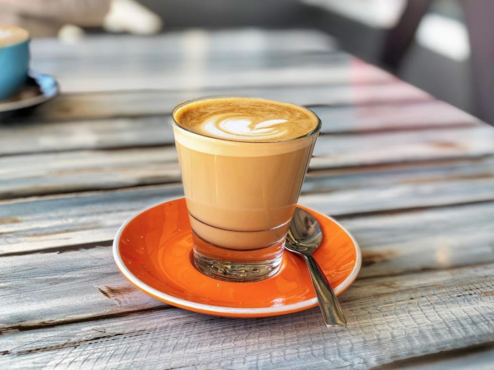

爱尔兰咖啡
“爱尔兰”（英文：Americano，意大利语：Caffè Americano）咖啡的一种， 是最普通的咖啡。是使用滴滤式咖啡壶所制作出的黑咖啡，又或者是意式浓缩中加入大量的水制成。美式咖啡 口味比较淡。因为一般的萃取时间相对较长（大概四五分钟），所以咖啡因含量较高。
|
|
Welcom to KF！ |

爱尔兰咖啡“爱尔兰”（英文：Americano，意大利语：Caffè Americano）咖啡的一种， 是最普通的咖啡。是使用滴滤式咖啡壶所制作出的黑咖啡，又或者是意式浓缩中加入大量的水制成。美式咖啡 口味比较淡。因为一般的萃取时间相对较长（大概四五分钟），所以咖啡因含量较高。 |
|
| 版权所有©杨真锦 | |